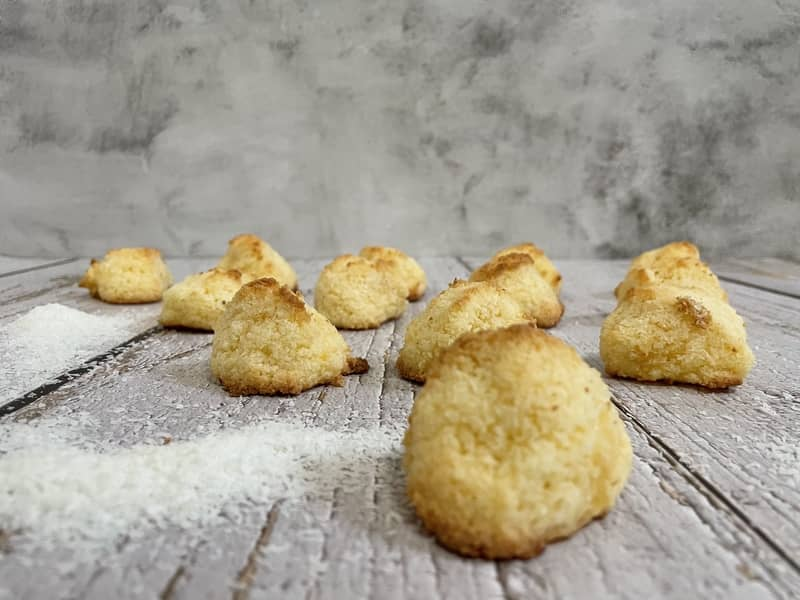

Pão Doce de Coco
Um pão doce com um delicioso sabor a coco, perfeito para os amantes deste ingrediente tropical.
Receita
- 500g de farinha de trigo
- 100g de coco ralado
- 7g de fermento seco
- 250ml de leite morno
- 50g de manteiga
- 100g de açúcar
Passos:
- Misture a farinha, o açúcar e o coco ralado.
- Adicione o fermento e o leite morno, amassando até integrar.
- Incorpore a manteiga e continue amassando até obter uma massa homogênea.
- Deixe descansar por 1 hora.
- Modele os pães e deixe descansar mais 30 minutos.
- Asse a 180°C por 25 minutos.
- Deixe esfriar antes de servir.

Fabricação
Este pão doce é preparado com farinha de trigo e coco ralado, criando uma textura macia e úmida.